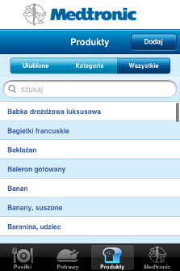

Produkt to podstawowy element żywnościowy o podanych wartościach odżywczych.
W aplikacji znajduje się alfabetyczny spis produktów dostępnych w aplikacji, lista produktów podzielona ze względu na kategorie i podkategorie oraz zakładka ulubionych produktów użytkownika.

Dla każdego z produktów aplikacja wyświetla wiele przydatnych informacji, takich jak: procent WBT, wymienniki węglowodanowe i białkowe, liczbę kalorii. Aby przejść do szczegółów konkretnego produktu należy kliknąć zakładkę Produkty i wybrać konkretny produkt.
Na ekranie szczegółów produktu możliwe jest przeliczenie jego wartości odżywczych dla pożądanej wagi.
Domyślnie wartości wyświetlane są na 100g.